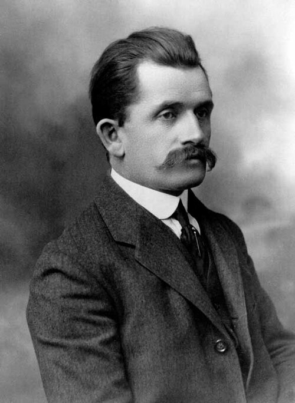
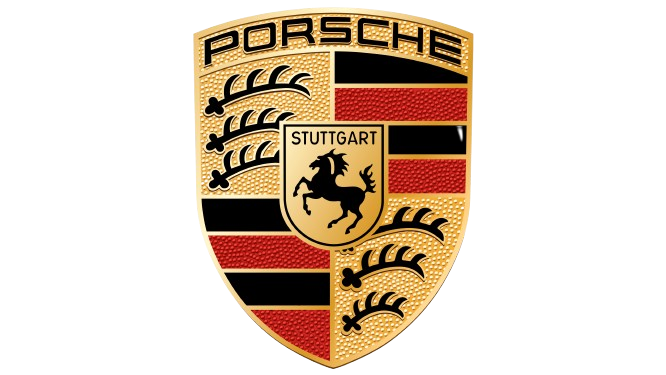
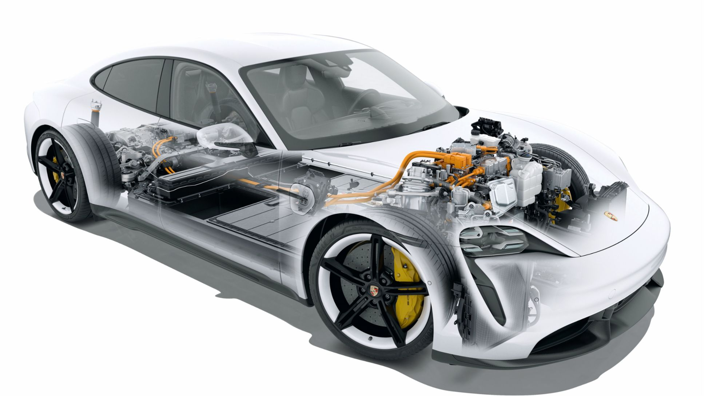
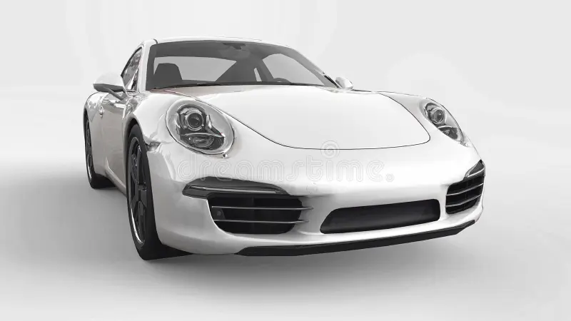
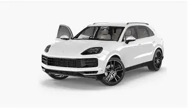
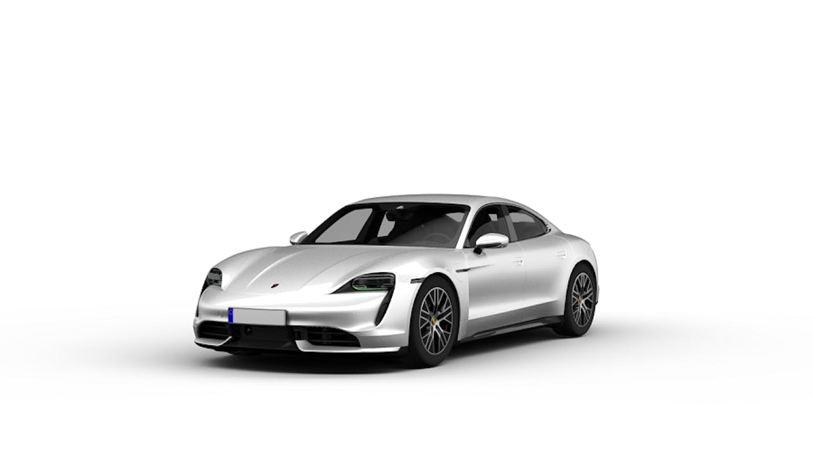

A Porsche é uma fabricante alemã fundada em 1931 por Ferdinand Porsche. Reconhecida mundialmente, a marca se destacou por unir desempenho esportivo, design sofisticado e confiabilidade.
História

Exclusividade
A Porsche mantém sua identidade única ao longo das décadas, equilibrando inovação tecnológica com tradição. Seus modelos oferecem alto nível de personalização, garantindo exclusividade aos clientes.

Tecnologia
A Porsche é pioneira em engenharia automotiva, trazendo motores turbo, sistemas híbridos e elétricos de alto desempenho, além da tração integral em modelos esportivos.

Modelos Mais Vendidos
Porsche 911
Ícone absoluto da marca, o Porsche 911 combina tradição e inovação, sendo referência entre esportivos de luxo desde 1964.

Porsche Cayenne
O Cayenne foi um marco na história da Porsche ao entrar no mercado de SUVs de luxo, combinando espaço, conforto e desempenho esportivo.

Porsche Taycan
O Taycan é o primeiro modelo totalmente elétrico da Porsche, trazendo inovação sem abrir mão da esportividade que caracteriza a marca.
